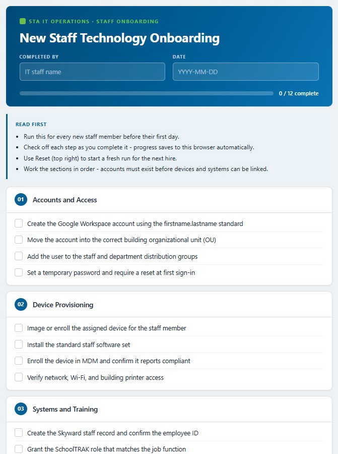
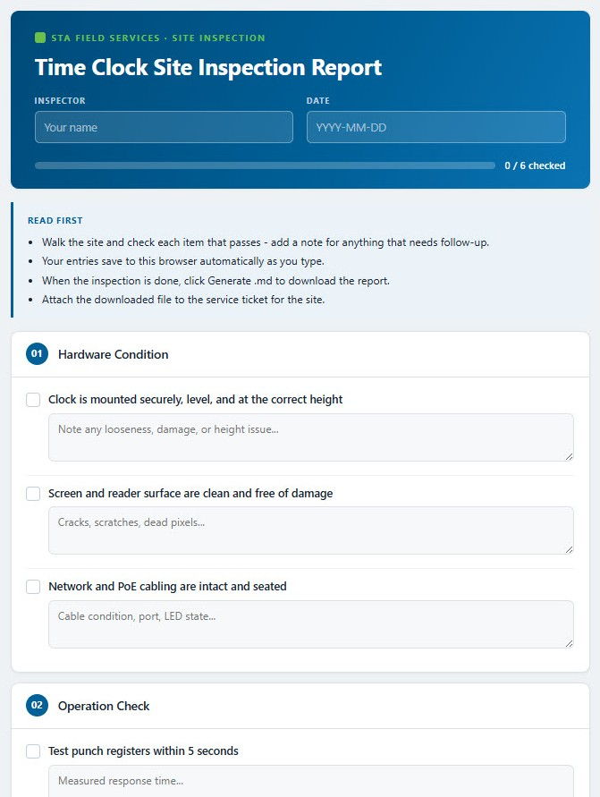

Converts a process, workflow, document, or step list into a single-file interactive HTML file with STA branding. It works from an uploaded .docx, pasted text, a URL, or a plain bullet list.
Both carry the same STA masthead with completed-by and date fields.
Checkbox mode for anything you work through - onboarding steps, a deployment runbook, a recurring task list. Form mode for anything you collect - a client intake, a discovery questionnaire, an audit form.
Checkbox: "make this a checklist" · "turn this into a checklist" · "checkable version"
Form / intake: "fillable checklist" · "intake form" · "audit form" · "discovery form" · "a checklist that exports an .md"


What this skill needs in order to run. Added 2026-08-20.
Skills - None.
Connectors / MCP servers - present_files - required, to surface the skill's .skill file with a Save-skill button. WebFetch - only when the source is a URL; not needed for pasted text or a bullet list.
Folder access - Write access wherever the checklist HTML is saved.
KB modules / context files - None.
Repos - None.
If something is missing - A URL that will not fetch is LOUD. The SILENT risk is source quality: a page fetched with its nav, footer and ads included produces a checklist padded with content that is not a step, so confirm the extraction caught the main content only.